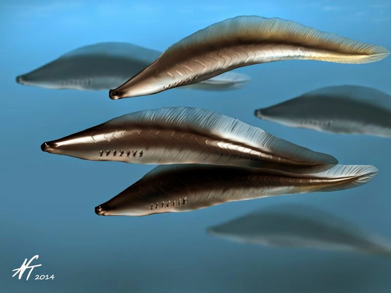
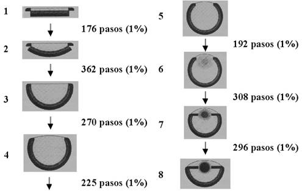
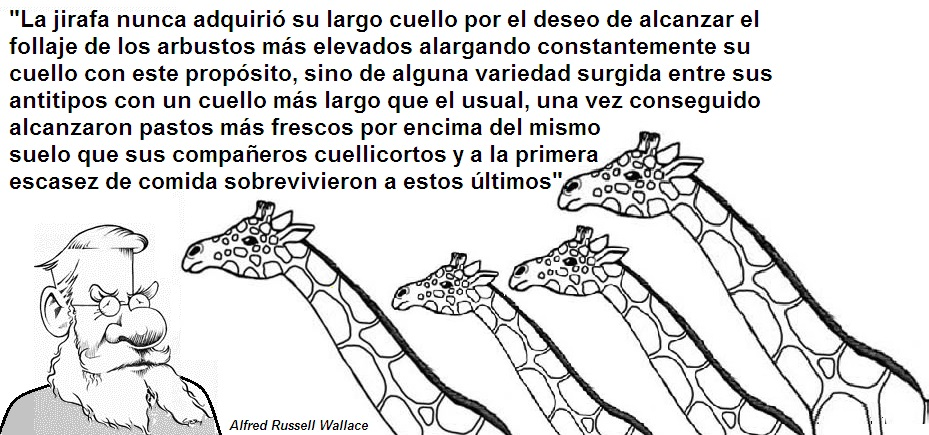

La hacedora de ojos y otras maravillas - Unidad 5
La hacedora de ojos y otras maravillas

Un halcón vuela alto sobre un potrero con árboles y un pequeño río. En un momento da un círculo en el cielo y luego se lanza en picada. En pocos segundos en sus garras está un conejo que tuvo un breve tiempo para huir. Antes de caer en las garras del halcón su corazón se aceleró por la acción de la adrenalina, su frecuencia respiratoria aumentó, y se disparó el nivel de glucosa en su sangre. Pero esto no le alcanzó.
El éxito de las aves rapaces se debe en gran parte a su visión. Los seres humanos tienen 200.000 células sensibles a la luz por milímetro cuadrado de retina, mientras que las águilas, por ejemplo, superan a los humanos con cerca de 1 millón de células sensibles a la luz por milímetro cuadrado en la retina. No obstante la gran visión del águila y los halcones, nunca veraz a un águila cazando en la noche. Esto último si lo hacen los búhos, en los que su sentido estrella es la audición. Muchas especies de búhos captan sonidos diez veces más débiles que los que puede percibir el ser humano.
Pero búhos y águilas obtuvieron sus sentidos maravillosos gracias a un proceso denominado selección natural (Ver unidad 4). Este proceso se basa en la diversidad fenotípica heredable que hay en las poblaciones. Con base en las diferencias existentes unos organismos dejan mayor descendencia que otros. Así pues cada vez que aparecía una variante que permitía ver mejor, o escuchar mejor, era ese organismo favorecido en la lucha por la existencia.
La selección natural es un mecanismo que se conoce desde 1859 gracias a los trabajos de Darwin y Wallace. No obstante, muchas personas no la entienden correctamente, razón por la que es necesario puntualizar que:
La selección natural es un proceso que hace referencia a la selección “de” una característica, no es selección “para” un fin. En otras palabras, la selección natural no tiene una intencionalidad o finalidad predeterminada.
La selección natural es un proceso ciego, pero eso no significa que sea aleatorio. Es determinista, ya que selecciona características que mejoren la eficacia biológica (que permita dejar más hijos).
La selección natural no está dirigida a solucionar retos ambientales en el futuro. Como ya se mencionó, no está dirigida a nada. Es el resultado de la supervivencia y reproducción diferencial en una población con fenotipos diversos.
Los organismos son agentes pasivos que son seleccionados por el ambiente. No hay una tendencia en los organismos en querer alcanzar la perfección o de perfeccionarse.
Volvamos nuevamente a los ojos de los vertebrados. Si nos remontásemos 530 millones de años a los ancestros de halcones y águilas, y también de los seres humanos no se parecía mucho a estas. De hecho, la forma ancestral vivía en el mar y era un pez craneado, sin mandíbulas, con branquias, una cola y ojos. Una especie de esta época, muy cercano a la forma ancestral es el Haikouichthys ercaicunensis, una especie ahora conocida por fósiles.
Obviamente ha habido un gran cambio en estructuras anatómicas, patrones de comportamiento, y fisiología desde los tiempos de Haikouichthys hasta el presente. Debemos recordar que por evolución biológica se entiende el cambio en la estructura de las poblaciones con el paso de muchas generaciones. Y en 530 millones de años ha habido muchísimas generaciones.
Haikouichthys ya poseía ojos, aunque su visión no era tan buena como la de las águilas, le permitía buscar su comida y huir cuando percibía alguna amenaza.
Los orígenes del ojo hay que buscarlos mucho más atrás en el tiempo. Mucho más atrás que Haikouichthys (luego retomaremos este pez), es necesario remontarse a los tiempos en el que los mares solo contenían unicelulares. Entonces ya había organismos que poseían cierta capacidad fotosensible (sensibilidad frente a la luz). Muchos unicelulares pueden ubicarse espacialmente, es decir nadar hacía arriba o hacia abajo, gracias a que son sensibles a la luz. Esta sencilla distinción entre luz y oscuridad fue el primer paso en la evolución del ojo.
Para este primer paso puede considerarse posible al ver el fotorreceptor que existe en Euglena, un protista fotosintético que tiene un organelo sensible a la luz conectado con el flagelo que le permite la locomoción. No se afirma que los ojos de los humanos se remonten al fotorreceptor (eyespot en inglés) de Euglena, solo se muestra que este primer paso es posible en la naturaleza.
El siguiente paso involucraría a un animal pluricelular. Tendríamos una capa de células sensibles a la luz. Esto lo podemos encontrar en las lombrices de tierra actuales y en anélidos acuáticos que ya presentan una capa ordenada de células fotosensibles.
Luego, la selección natural favoreció a aquellos organismos que tuviesen capacidad fotosensible ya que le permitiría a su poseedor nadar hacía a la superficie, conseguir alimento u ocultarse cuando una sombra se presentaba el organismo y así salvarse de un predador. Ahora si ésta capa de células se invaginase podría dar cabida a una mayor cantidad de células, y esto constituiría una ventaja. Esto no es cambio imposible pues solo sería necesaria una modificación en la forma de expresión de algunos genes ya existentes. Una capa de células fotosensibles invaginada puede obtener una nueva información no disponible para una capa plana, saber de dónde provienen los haces de luz. Precisamente en el molusco gasterópodo Patella, (los gasterópodos son el grupo de las babosas y caracoles) se encuentra un estructura así.
En el gasterópodo Pleurotomaria encontramos una estructura invaginada mucho más profunda; En el género Haliotis encontramos un ojo casi cerrado; en el género Turbo el ojo ya está cerrado pero sin lente, y finalmente encontramos ojos cerrados y con lente en los géneros Murex y Nucella. Así pues hay ejemplos en la naturaleza que muestran que estos estadios intermedios son posibles. Añado que la presencia de una lente mejora muchísimo la visión, pero bien pueden existir organismos sin esta estructura, lo cual invalida el argumento creacionista que afirma que: “Tales órganos habrían sido inútiles hasta que todas las partes individuales estuvieran completas”
Los biólogos suecos D. E. Nilsson y S. Pelger con ayuda de un computador cuantas generaciones se requerirían para producir un ojo a partir una capa de células fotosensibles en medio de una capa transparente y una capa opaca. A partir de este ojo en una población original de individuos, y teniendo una variabilidad del 1% en la posición y grosor de las capas iniciales se obtendría en 1829 pasos un ojo en forma de cámara con lente de refracción. En el modelo se asumió que no se podía dar más de una mutación por generación y en caso de esta darse solo tiene el 50% de probabilidad de heredarse. El modelo estimo que los 1829 pasos en la producción del ojo podrían tomar 364.000 generaciones o años (asumiendo que cada animal durase un año). La vida sobre la Tierra es mucho más enorme, está calculada en 3.500 millones de años desde las primeras células (bacterias) y 1.500 millones de años desde las primeras células eucariotas.
Como el trabajo de Nilsson y Pelger muestran, así como los estadios intermedios de ojos entre los moluscos, la selección natural es verdaderamente la fuerza creativa de la evolución.

Volvamos a tomar a Haikouichthys ercaicunensis, el pez del período cámbrico que se mencionó hace un momento. Este pez, o una especie muy cercana a esta, fue el ancestro de los vertebrados posteriores. Tanto los peces con mandíbulas, los tetrápodos (vertebrados con cuatro extremidades), como acuáticos, terrestres y aéreos.
Este pasado evolutivo ha dejado un rastro en los organismos actuales, ya muy diferentes a su antepasado pez. Cuando los vertebrados se están desarrollando en su etapa embrionaria desarrollan hendiduras faríngeas que en los peces dan origen a las branquias, pero que no dan origen a estas estructuras en los mamíferos. En los vertebrados estas hendiduras faríngeas tienen asociados nervios y vasos sanguíneos. A medida que la selección natural actuaba en diferentes linajes de organismos modificó a los seres trabajando sobre las estructuras ya existentes. La evolución no parte de cero. Así pues es posible encontrar en los mamíferos que el nervio laríngeo recurrente, un nervio asociado a las hendiduras faríngeas en la etapa embrionaria, en vez de ir directamente del cerebro al cuello, desciende hasta el pecho y rodea la aorta para llegar finalmente a la laringe por debajo de las cuerdas vocales. Este recorrido se originó en los arcos branquiales de los antiguos peces cercanos a a Haikouichthys ercaicunensis. En el caso del ser humano el desvió del nervio laríngeo es de alrededor de unos 40 centímetros. Pero, en la jirafa esta fibra nerviosa realiza un recorrido de cerca de cinco metros. Una anatomía que deja ver que las estructuras se modifican sobre lo ya existente, y no que fueron diseñadas o planeadas de antemano.

Las chapuzas anatómicas, como la del nervio laríngeo recurrente de las jirafas, son una marca de la evolución. En tiempos pasados, otra característica de las jirafas fue interpretada de manera errónea.
El naturalista Jean Baptiste Lamarck (1744-1829) pensó que había una tendencia en los organismos hacia la perfección y que los organismos a medida que usaban más un órgano este se encontraría más desarrollado en las siguientes generaciones. Hoy sabemos que la idea de Lamarck es equivocada porque no se heredan intenciones, se heredan genes. Pero en tiempos de Lamarck no se conocían los genes (los experimentos de Mendel se harían entre 1856 y 1863).
Alfred Wallace se dio cuenta que la explicación al cuello de la jirafa estaba en la selección natural y no en la heredabilidad de los esfuerzos de los progenitores.
En su obra Wallace afirmo que “La jirafa nunca adquirió su largo cuello por el deseo de alcanzar el follaje de los arbustos más elevados alargando constantemente su cuello con este propósito, sino de alguna variedad surgida entre sus antitipos con un cuello más largo que el usual, una vez conseguido alcanzaron pastos más frescos por encima del mismo suelo que sus compañeros cuellicortos y a la primera escasez de comida sobrevivieron a estos últimos.”
La historia del largo nervio laríngeo de la jirafa se puede descifrar analizando la embriología de los vertebrados. De igual manera, la historia del largo cuello de las jirafas se puede deducir del registro de fósiles de la familia de las jirafas. Pero igual o más maravilloso ha sido un experimento que ha permitido registrar y guardar una historia evolutiva de más de 60.000 generaciones.
Obviamente no se pueden guardar 60.000 generaciones de jirafas en un laboratorio, pero sí de bacterias. Y esto es precisamente lo que hizo el doctor Richard E. Lensky y su equipo. Ellos trabajaron con Escherichia coli, que es una bacteria anaerobia facultativa, es decir que puede obtener energía en ausencia de oxígeno, pero el oxígeno no les es tóxico. Esta bacteria puede alimentarse de azúcares como la glucosa y la lactosa, y se encuentra en los intestinos de muchos animales.
Pues bien, Lensky y su equipo cultivaron estas bacterias y congelaban una muestra de cada generación. En abril de 2014 se alcanzó la generación 60.000. Al congelar las muestras es posible analizar todo los genes - el genoma - y ver que mutaciones han ocurrido cuando algo diferente se nota en los cultivos de bacterias.

El experimento que inició en 1988 mostró algo sorprendente en la generación 31.000. Una de las colonias de bacterias eran capaces de crecer y alimentarse de citrato en condiciones aeróbicas (es decir, en presencia de oxígeno). El citrato es una sal del ácido cítrico presente comúnmente en frutas como la naranja. Esta habilidad es posible solo con tres mutaciones en el genoma original de las E. coli. Estas mutaciones no aparecieron como resultado de la presencia de citrato en el medio. Estas se dan espontáneamente entre las bacterias. El estudio del genoma de muchas poblaciones de bacterias del experimento de Lensky mostró que las tres mutaciones se han dado en muchas colonias. Pero algunas solo poseen una de las tres. Lo realmente interesante es que cuando en un individuo se presentaron las mutaciones que permitían la asimilación del citrato. Este tuvo una ventaja competitiva frente a sus compañeros. Esta célula se reprodujo y dejó más descendientes, y pronto toda una colonia compartía ese rasgo.
En biología se conoce como evolución al cambio de la estructura genética de las poblaciones con el paso de muchas generaciones. En el caso de las bacterias que ahora pueden utilizar citrato se puede notar como su estructura genética ha cambiado respecto a la de sus lejanas progenitoras, por lo tanto se puede decir que ha ocurrido evolución y que esta ha sido observada.
El experimento de Lensky no solo comprobó la evolución por selección natural propuesta por Darwin y Wallace, sino que permitió identificar sobre el genoma que cambios se dieron y en que generación. El experimento aún sigue en la Universidad de Michigan.
La evolución biológica, ocurrida principalmente mediante la selección natural acumulativa no es sólo la explicación de cómo las jirafas adquirieron sus cuellos largos o de como unas bacterias desarrollaron la capacidad de asimilar citrato, es de hecho la única teoría científica que es capaz de explicar la existencia de la complejidad organizada de las adaptaciones, y en últimas de los seres vivos. La genialidad de Wallace y Darwin consistió en haber encontrado el mecanismo que nos permite responder porqué hay seres vivos en el mundo.
Enlaces de interés
Selección Natural https://evovagario.wordpress.com/evolucion/mecanismos/seleccion-natural/
¿Qué es la selección natural y cómo es ella central a la teoría de la evolución?
http://www.sindioses.org/cienciaorigenes/douglasfutuyma.html
La selección natural: “Me replico, luego existo” http://bioinformatica.uab.es/divulgacio/lasn/
Bibliografía
Campbell, N (1990). Biology. Second edition, Benjamin/Cummings.
Curtis, H., Barnes, S. (1989). Biology, Fifth edition, Worth Publishers.
Darwin, C. (1859). El origen de las Especies, Madrid, Ediciones EDAF.
Dawkins, R. (2009). Evolución: El mayor espectáculo sobre la Tierra. Espasa Libros
Hickman, C., Roberts, L, y Parson A. (1998). Principios integrales de zoología. Décima edición. Buenos Aires. McGraw-Hill-Interamericana.
Sadava, D. et al (2009). Vida. La ciencia de Biología. Buenos Aires, Argentina, Editorial Médica Panamericana.
Wallace, A.R.(1858). Sobre la tendencia de las variedades para alejarse indefinidamente del tipo original. Recuperado de: http://www.revista.inecc.gob.mx/article/view/131
Créditos de fotografías
Foto 1: http://www.colchonero.com/tablero_de_noticias_miscelanea-itemap-14-78926-3747.htm
Imagen 3: http://bioinformatica.uab.es/divulgacio/lasn/
Imagen 4: http://es.pseudociencia.wikia.com/wiki/El_ojo_y_la_evoluci%C3%B3n
Imagen 7: http://beacon-center.org/blog/2013/11/20/the-man-who-bottled-evolution/
Comentarios
Comments powered by Disqus